1) In order to start the process of getting your business manager
account approved or verified, first go to your Business Manager account:
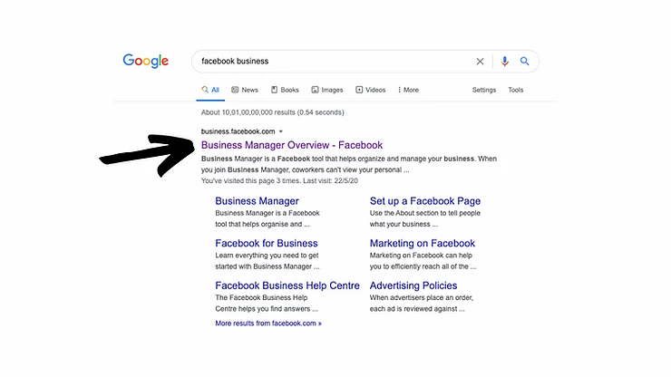
2) Click on the business manager account you are looking to verify
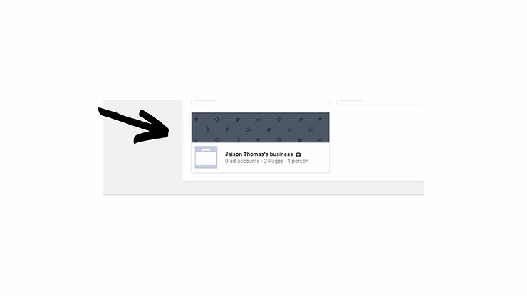
3) In the dashboard, scroll down and click on "Business Info"
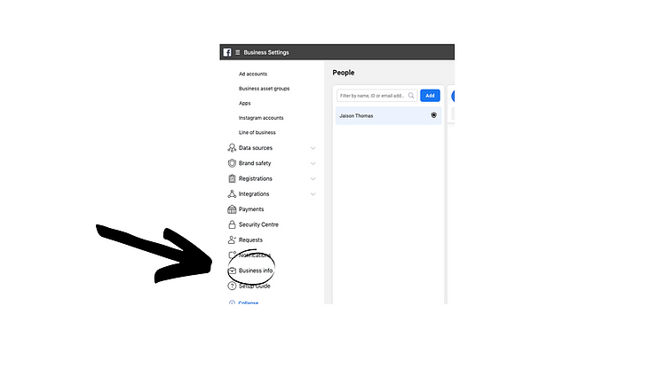
4) Now, if your business is not verified by Facebook it will show an
"Unverified badge". To proceed, click on "View Details"
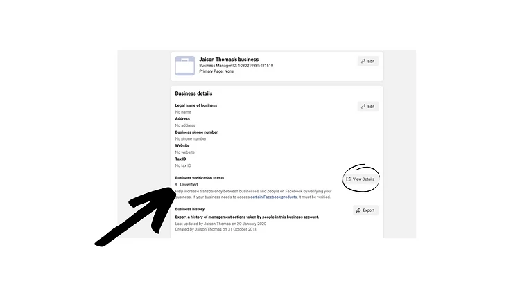
5) Now comes the tricky part; most probably the "Start verification"
button under Business verification section would be greyed out or would
not work or might not be clickable.
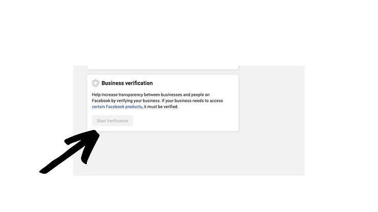
6) In order to make that "Start verification" button clickable or
working, you have to connect a Facebook app ID to your business manager
account. In order to do so, first, go to "
Facebook for developers
"
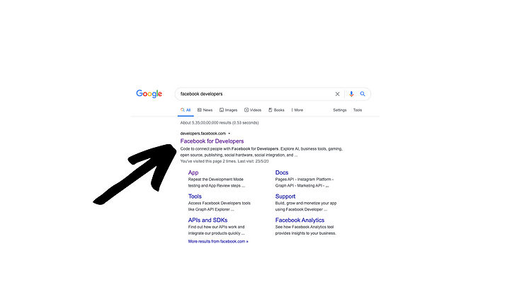
7) Then on the "My Apps" dropdown, if you already have an app click on
it or if you don't have an app to create a new one.
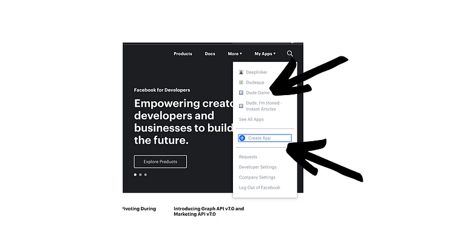
8) Then go ahead and copy the "APP ID" from the dashboard.
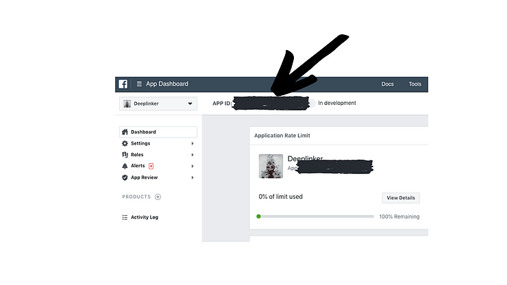
9) Now go back to Business manager click on "APPS"
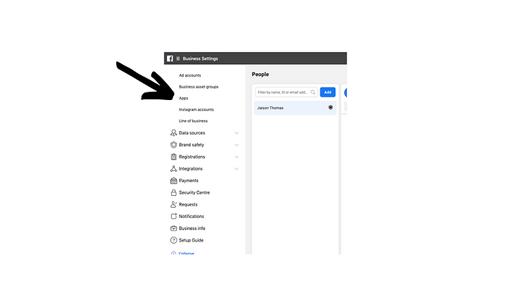
10) Select "Connect an app ID"
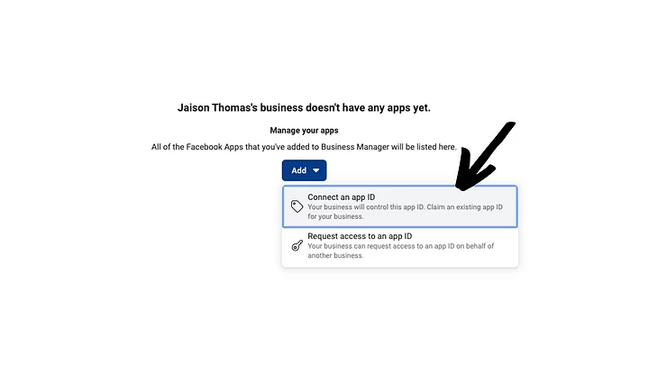
11) Now paste the "APP ID" in the box
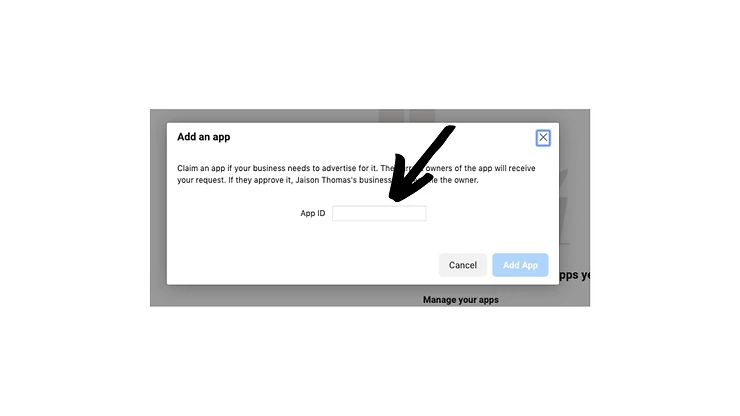
12) Now go back to Facebook developer dashboard and make sure that you
have given a valid "Privacy Policy URL".
This is done because if you need to get your Business Manager Account
verified, your app needs to have a Privacy Policy.
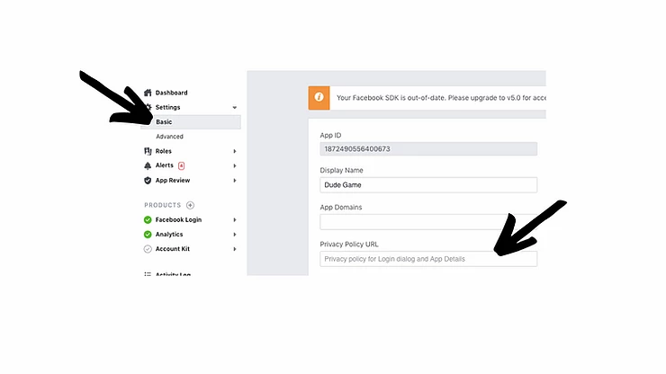
13) Then go back to step 5 page and now the button will have turned
clickable and not greyed out.
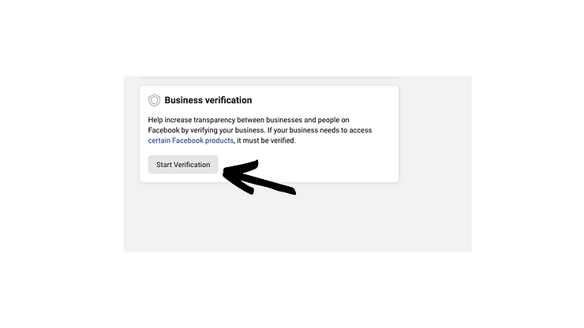
14) It will now redirect you to a form in which you have to upload your
basic business details.
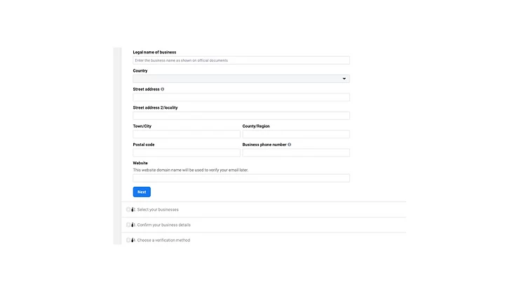
After applying for verification, it might take 3-5 business days to get
a reply back from Facebook. If everything goes with the Facebook
policies, your business manager will get approved. This will help in
unloading more awesome features such as Whatsapp business integration.
You can
buy me a coffee
if you want me to do all this verification process for you :)
[About the author:
Jaison Thomas
is an entrepreneur, speaker & writer. He co-founded the digital
marketing agency,
Blusteak
.]


 +91 77366 95526
+91 77366 95526
 info@blusteak.com
info@blusteak.com